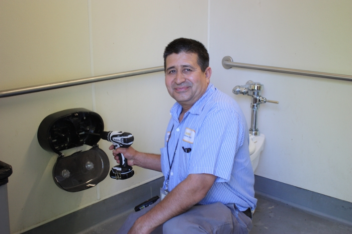
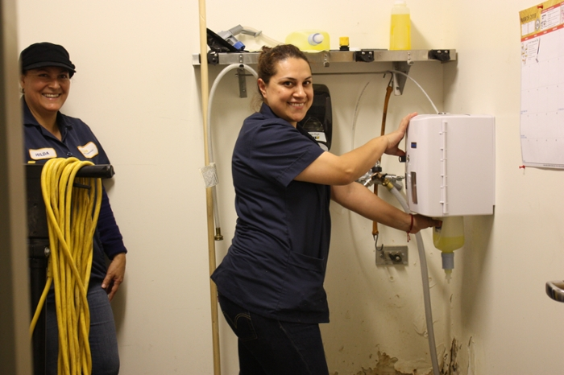
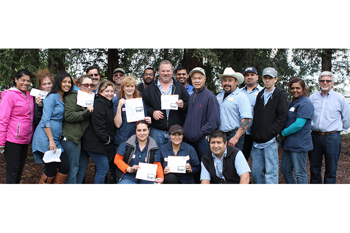

Meet the maintenance workers that keep our campus clean.




They keep clean walls on campus from going extinct. Here's what you can do to make their job a little easier but still express yourself:
Draw on the Cruess Hall chalk wall.
Express yourself vocally in an oganized rally.
Propose a new piece of public art in the City of Davis.
Try art therapy exercises to express your message.
Learn about the extinction symbol and implementing it into your message.